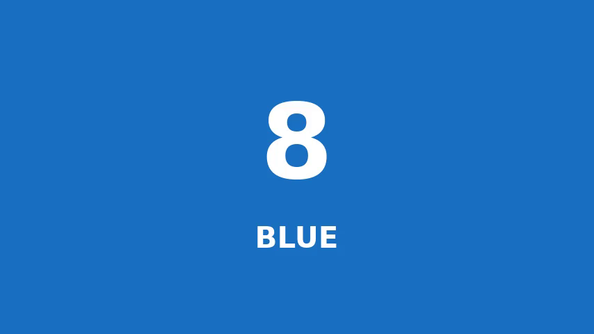
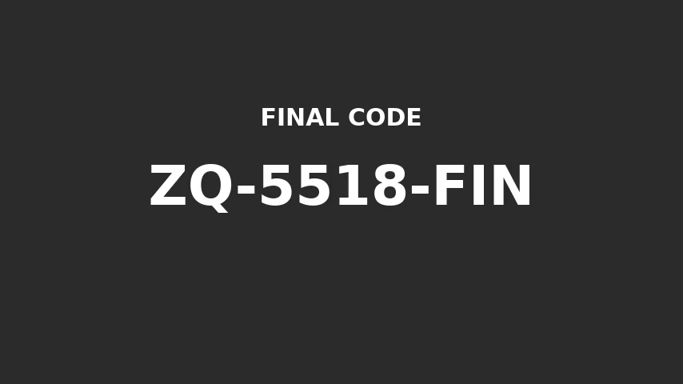

Date: 2026-11-19. This page presents a 45-second synthetic test video for review: three frames from the video, the work summary, structure and design, narration notes, measured values, and questions. There is no audio on this page.


A 45-second synthetic test video. Resolution 854×480, 30 fps, H.264 video + AAC audio. No people appear; all visuals are full-screen text cards and color cards.
| Time | Section | Content |
|---|---|---|
| 0:00–0:10 | Opening card | Dark navy screen. The label “START CODE” above a large code string (Frame 1). |
| 0:10–0:15 | Slate | Plain dark screen with the small caption “SCENE ONE”. |
| 0:15–0:30 | Color cards | Four full-screen color cards in sequence, each showing one large number and the color name (Frame 2 shows one of them). One English sentence is spoken by a synthetic voice over this section. |
| 0:30–0:45 | Closing card | Dark gray screen. The label “FINAL CODE” above a large code string (Frame 3). |
The only narration is one English sentence spoken by a text-to-speech voice in the color-card section. The sentence is not printed on this page and no audio is provided here.
| Duration | 45.07 s |
| File size | 164,909 bytes |
| Video | H.264, 854×480, 30 fps |
| Audio | AAC; max volume −8.0 dB, mean volume −37.9 dB |